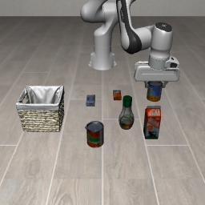
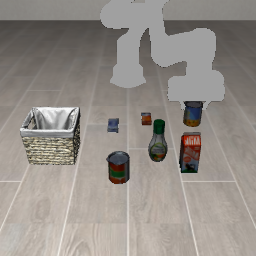
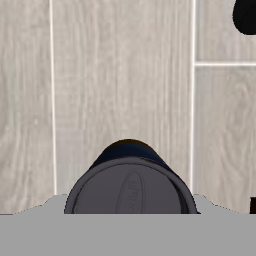

A は Franka、B は UR5e、0 はスープ。50 配置・seed 7・300 ステップの公式評価。2026-11-04。
| やるべきタスク | 腕なし画像 | 正規化だけ | さらに前 | |
|---|---|---|---|---|
| A0 → A0 | Franka でスープをカゴへ | 32/50 | 34/50 | 36/50 |
| A0 → B0 | UR5e でスープをカゴへ | 0/50 | 実質 0/50 | 0/50 |
腕を消しても Franka 自身は動く。UR5e では 50 回とも缶に届かず、持ち上げは 0。
公式評価から 4 本。やるべきタスクはスープをカゴに入れること。重みは Franka スープ、腕なし画像で学習したもの。Franka の動画は方策に渡している画像なので腕が灰色。UR5e の動画は実機の見た目（記録は塗っていない）。
直したのは状態の数字だけ。以前は UR5e の真下向きが Franka の統計で約 −540 になっていた。今回は同じ姿勢なら両ロボットとも −1〜1 に入る。それでも A0→B0 の動きは変わらなかった。
だから失敗の原因は、状態のスケールではない。モデルは画像も見ている。学習時の腕は白い Franka、推論時は青い UR5e で、形も色も違う。最初から缶と反対の右へ大きく動くので、指令そのものがおかしい。同じ指令なのに 2 台で手が少し違う、という話でもない。
つかんだときのグリッパ値の差（Franka 約 −0.56、UR5e 約 −0.14）も、今回は関係ない。缶まで行っていない。腕を灰色に塗っても A0→B0 は同じ動きのままなので、白い腕の写真だけが原因でもない。
Adapt3R に合わせて、学習・推論の RGB から腕を塗っています。缶とカゴはそのまま。



腕は消していない。公式評価から 4 本。重みは Franka スープ。
デモは使っていない。シーンの配置とロボットの仕様だけ。学習と推論で同じ関数。
| 表し方 | −1 | +1 | |
|---|---|---|---|
| 位置 xyz | メートルのまま | −0.31, −0.345, 0 | 0.26, 0.375, 0.45 |
| 姿勢 | 真下（x 軸 π）からのずれ | −0.5 rad | 0.5 rad |
| グリッパ | 閉じ具合 0〜1 を 2 回。Franka は 1−幅/0.08、UR5e は関節/0.8 | 全開 | 全閉 |
| 行動 7D | OSC。1 で 5 cm。グリッパ −1 開 / +1 閉 | −1 | 1 |
位置の範囲は LIBERO-Object 全 10 タスク×50 配置の物体・カゴ中心に 10 cm 余白。リークなし。ガウシアンノイズなし。